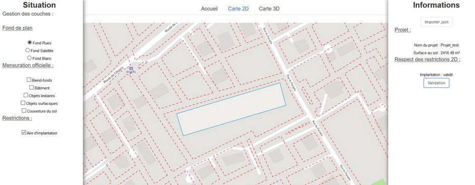
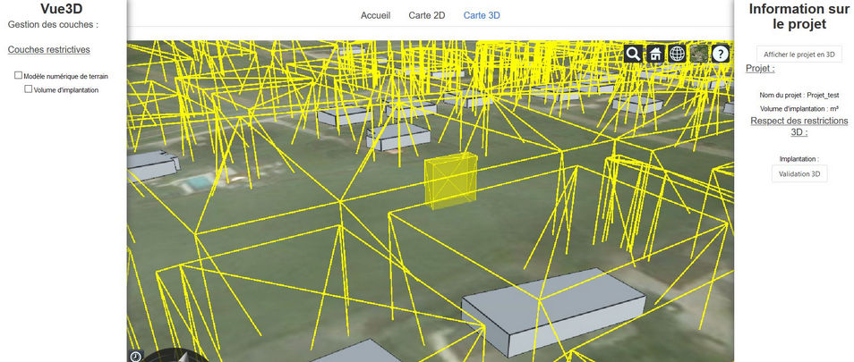

class: center, middle # Introduction --- ## Summary .breadcrumbs[<a href="#1">Introduction</a>] Learn more about this course This material is part of the [Géoinformatique opérationnelle : Développement avancé d’outils](https://github.com/Tazaf/heig-mdt-gio1) for the [Master of Science HES-SO en Développement Territoriel](https://master.hes-so.ch/domaines/ia/mdt). --- ## Lecturers .breadcrumbs[<a href="#1">Introduction</a>] - Mathias Oberson, Square Services - Jens Ingensand, HEIG-VD - (Thibaud Chassin, HEIG-VD / EPFL) --- ## Prerequisite .breadcrumbs[<a href="#1">Introduction</a>] - Basics of HTML, CSS and JavaScript - Basics of Object Oriented Programming [OOP][oop] - Experience with geodata - Use of command line [oop]: https://www.datacamp.com/community/tutorials/python-oop-tutorial/ --- ## Expectations .breadcrumbs[<a href="#1">Introduction</a>] - What is your experience? (e.g. programming languages, use at work) - What are your expectations? --- ## Web development? .breadcrumbs[<a href="#1">Introduction</a>] - Utilization of web tools in the field of geomatics is increasing (e.g. geoportals, etc) - Increasing processing power on the client (more memory, faster cpu's) - Mobile development (e.g. using [Apache Cordova][cordova]) --- ## Goals .breadcrumbs[<a href="#1">Introduction</a>] - Learn to structure code: Code principles, Design patterns, Architectural patterns -> Easy to apply to other programming languages - Versioning tools: GIT -> Working together on code; create branches, etc - Utilization of a web framework with geodata (!= simply using a web cartography framework) -> Web frameworks increasingly important (e.g. Angular, Vue JS, etc) [cordova]: https://cordova.apache.org/ --- ## Program .breadcrumbs[<a href="#1">Introduction</a>] | # | #Lessons | Date | Subject | | --- | -------- | ---------- | -------------------------------------------------------------------------- | | 1 | 2 | 22.9.2022 | Introduction, program | | 2 | 2 | 29.9.2022 | Code structure, design patterns, architectural patterns, forming groups | | 3 | 2 | 6.10.2022 | Code structure, design patterns, architectural patterns, oral presentation | | 4 | 2 | 13.10.2022 | Versioning tools : GIT | | 5 | 2 | 20.10.2022 | Utilization of a web framework (VueJS) | | 6 | 2 | 27.10.2022 | Utilization of a web framework (VueJS) | | 7 | 2 | 3.11.2022 | Utilization of a web framework (VueJS) | | 8 | 2 | 10.11.2022 | Utilization of a web framework (VueJS) | | 9 | 2 | 17.11.2022 | Utilization of a web framework with geodata | | 10 | 2 | 24.11.2022 | Project | | 11 | 2 | 1.12.2022 | Project | | 12 | 2 | 8.12.2022 | Project | | 13 | 2 | 15.12.2022 | Project | | 14 | 2 | 22.12.2022 | Project presentation | --- ## Group project .breadcrumbs[<a href="#1">Introduction</a>] --- ### Design a 2D&3D geoportal .breadcrumbs[<a href="#1">Introduction</a> > <a href="#9">Group project</a>] Example: [geoportail.gouv.fr](https://www.geoportail.gouv.fr) --- ### Functionalities .breadcrumbs[<a href="#1">Introduction</a> > <a href="#9">Group project</a>] - _Landing page_: - Menu - Landing information - Location search - _Map page_: - A 2D view page - Advanced 2D functionality (of your choice) - 2D Layers visualization - A 3D view page - Advanced 3D functionality (of your choice) - 3D Layers visualization - _Additional components/pages_: - Team description - Documentation **Be creative!** --- ## Technologies .breadcrumbs[<a href="#1">Introduction</a>] - Vuejs v3+ [vuejs.org](https://www.vuejs.org) - Leaflet v1.7+ [leafletjs.com](https://leafletjs.com/) or Openlayers v6.7+ [openlayers.org](https://openlayers.org/) - Cesium v1.85+ [cesium.com](https://cesium.com/cesiumjs/) --- ## Cesium .breadcrumbs[<a href="#1">Introduction</a>] - A WebGL virtual globe for visualizing dynamic data - Open source - Updated every month --- ## 2D functionality examples .breadcrumbs[<a href="#1">Introduction</a>] - Real-time geolocated tweets: [demo](https://onemilliontweetmap.com/?center=25.505,-0.09&zoom=2&search=&timeStep=0&timeSelector=0&hashtag1=&hashtag2=sad&sidebar=yes&hashtagBattle=0&timeRange=0&timeRange=25&heatmap=0&sun=0&cluster=1) - Live SBB trains localization visualization: [demo](http://maps.vasile.ch/transit-sbb/) - Instragram filters on maps: [demo](http://humangeo.github.io/leaflet-tilefilter/demo.html) - Data filtering: [demo](https://dvorak.shinyapps.io/college_explorer/) --- ## 3D functionality examples .breadcrumbs[<a href="#1">Introduction</a>] - Replay drone flight: [demo](https://logs.px4.io/3d?log=7adce484-e6ce-4537-804f-0b386092032b) - Flight simulator: [demo](https://www.geo-fs.com/geofs.php) - Underground point clouds: [demo](https://cesium.com/blog/2020/08/25/national-security-hackathon/) Cesium gallery example with code: [sandcastle](https://sandcastle.cesium.com) --- ## Last Year projects .breadcrumbs[<a href="#1">Introduction</a>]  Planning hicking routes --- ## Last Year projects .breadcrumbs[<a href="#1">Introduction</a>]  Real-time parking occupancy --- ## Last Year projects .breadcrumbs[<a href="#1">Introduction</a>] <p align="center">  </p> <p align="center">  </p> Cadastral constraints --- ## @Todo .breadcrumbs[<a href="#1">Introduction</a>] - **06.10**: Select your groups (3x3) - **13.10**: 3 min oral presentation of your geoportal mock-up & fonctionalities